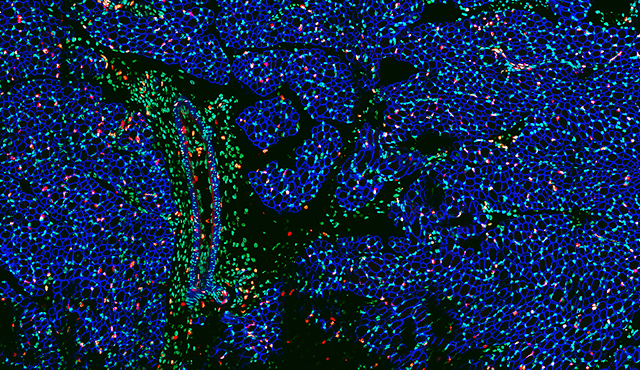

Era of Amphioxus [2017-2020]

My stepping stone into the scientific world and learning methodlogies began with this little worm. The amphioxus.
The
amphioxus is an animal closely related to vertebrates, a group comprising of fish,
amphibians,
reptiles, birds, and mammals. It is a close descendant of the last common ancestor to all vertebrates,
which lived about 500 million years ago (MYA). We can use the amphioxus as a portal to 500 MYA to understand ancient
populations of vertebrate ancestors that ended up developing unique features such as adaptive immunity, complex
nervous systems, endocrine signaling, and many other unique features.
Here are some things I did:
◉ Protocol development to culture and transfect amphioxus tissues. With the goal to make immortal cell lines. Lots of cloning.
◉ Finding a form of ancient adaptive immunity. [VCBPs]
◉ Husbandry and breeding protocols for the Amphioxus.
◉ Exploring why they produce GFP in their tentacles and eyespot area. Cloning the GFP gene from their genome,
which
resides in a freezer somewhere. Amplification of GFP from cDNA showed two possible splicotypes.
◉ Developing a crude tool to explore the
locations of ancient Chordates through time and space on Earth by tracing coastlines.
 If you would like more information, feel free to contact me.
[contact]
Go to Scientific Repertoire for
specifics.
If you would like more information, feel free to contact me.
[contact]
Go to Scientific Repertoire for
specifics.
The CNRC [Summer 2019]
Worked in this government building for a summer. Had blast. Spent plenty of time doing immunohistochemistry and
using a godly Leica SP8 confocal microscope. I'll throw a photo I took below:

This is a tri-stained cross section of baby pig muscle.
Watch me present this research at Houston Baptist University